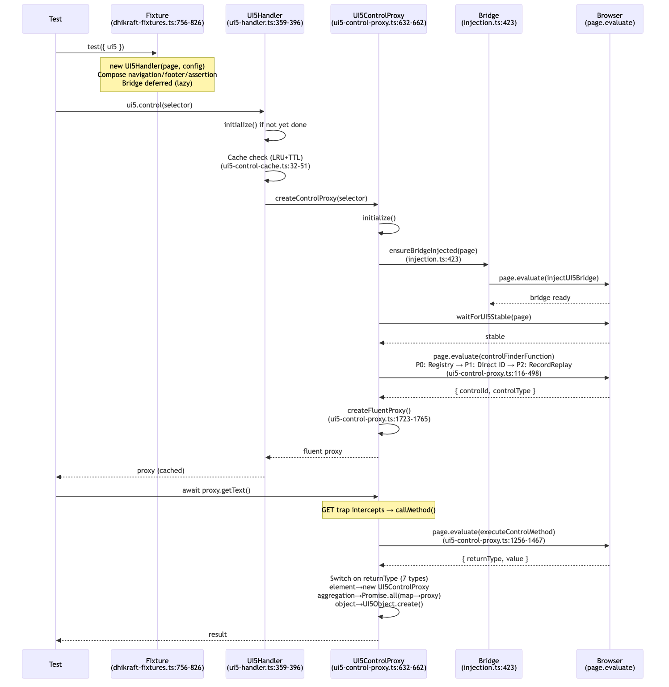
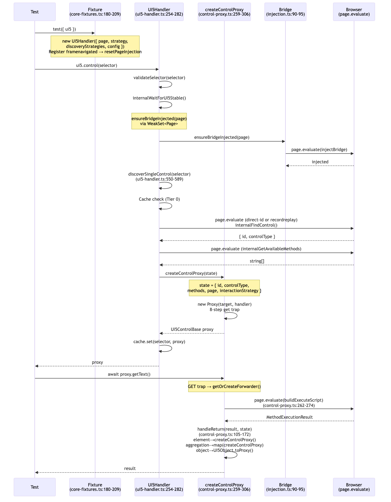
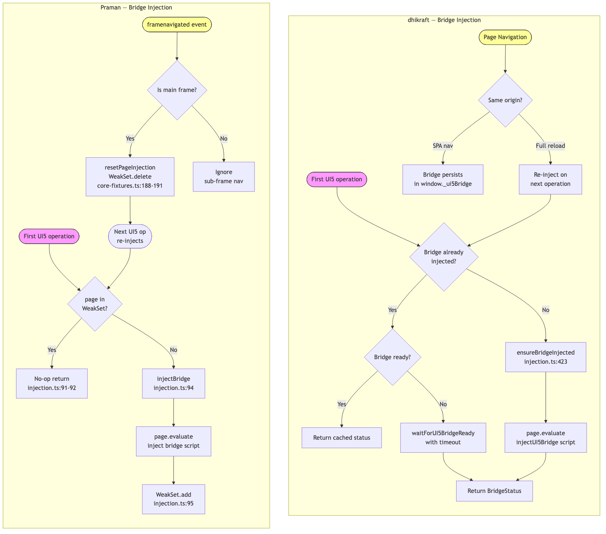
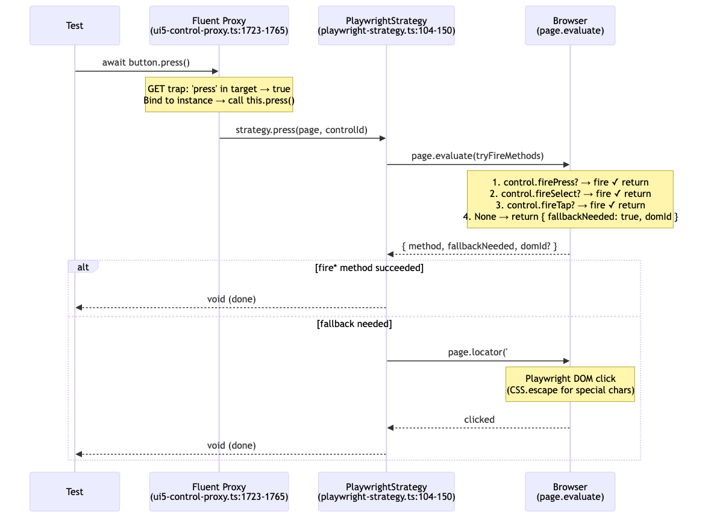
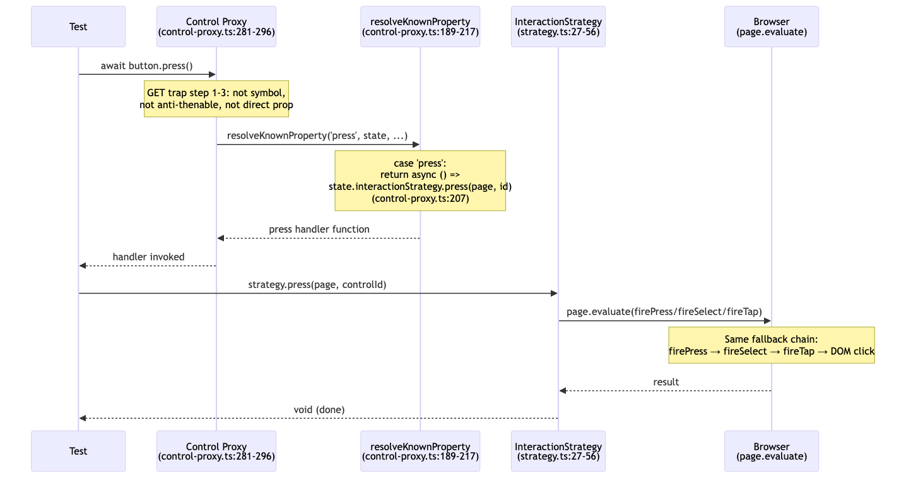
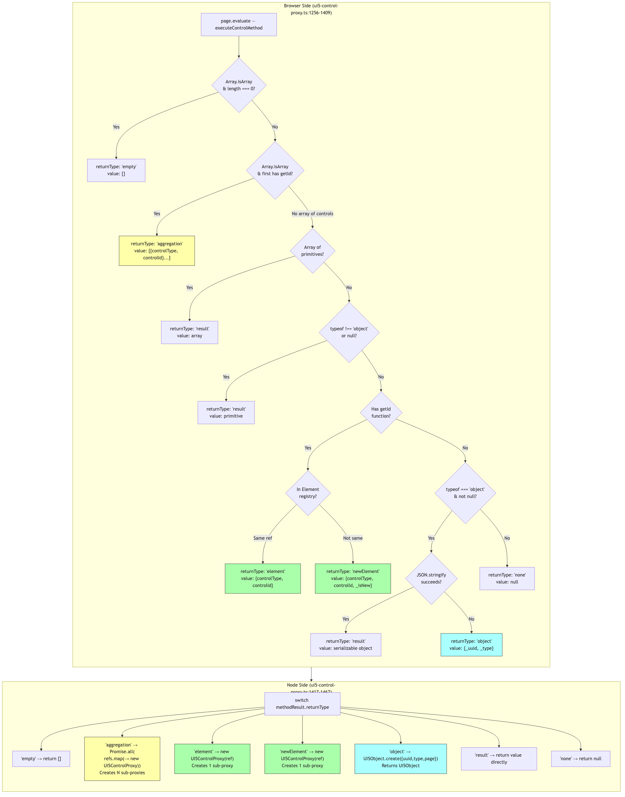
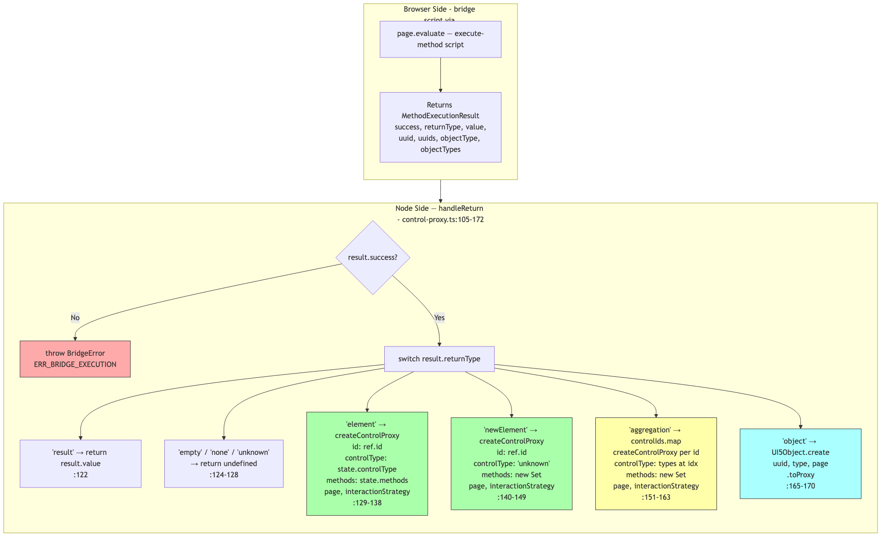
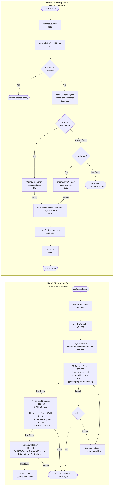
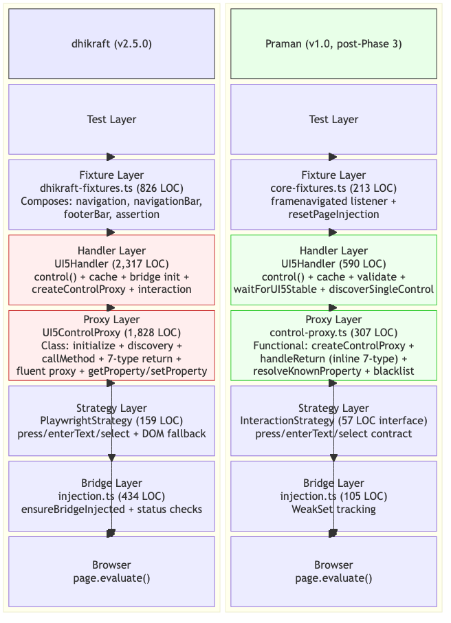
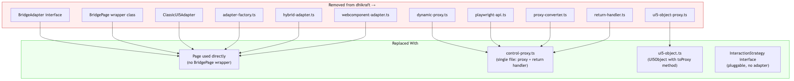

dhikraft v2.5.0 vs Praman v1.0 — post-Phase 3 simplification.
Every diagram references exact file:line from the codebases.



| Aspect | dhikraft | Praman |
|---|---|---|
| Tracking | Status check via isBridgeInjected() | WeakSet<Page> — O(1) lookup |
| Ready check | Separate waitForUI5BridgeReady polling | Single injectBridge call |
| Nav reset | Implicit (full reload clears window._ui5Bridge) | Explicit framenavigated listener resets WeakSet |
| Fixture wiring | Bridge deferred, handler self-heals | core-fixtures.ts:187-193 registers listener |
await button.press() v2.5.0
await button.press() v1.0
| Aspect | dhikraft | Praman |
|---|---|---|
| Proxy resolution | press is a class method on UI5ControlProxy | press resolved via resolveKnownProperty switch |
| Strategy binding | Strategy instantiated in handler constructor | Strategy passed via ControlProxyState |
| Fallback chain | Inline in PlaywrightStrategy.press() | Same chain but in pluggable strategy impl |
| DOM fallback | page.locator('#' + CSS.escape(id)).click() | Same pattern, delegated to strategy |


| Aspect | dhikraft | Praman |
|---|---|---|
| 7-type detection | Browser-side (in page.evaluate) | Browser-side (bridge script) |
| Sub-proxy creation | Node-side: new UI5ControlProxy() per ref | Node-side: createControlProxy() per ref |
| aggregation proxy | Promise.all(refs.map(→ new proxy)) — async | controlIds.map(→ createControlProxy) — sync |
| element proxy | new UI5ControlProxy(selector, page) (re-discovers) | createControlProxy(state) (ID-based, no re-discover) |
| object proxy | UI5Object.create() (returns UI5Object) | UI5Object.create().toProxy() (returns Proxy) |
| Error handling | Throws generic Error | Throws typed BridgeError with code + suggestions |
| Location | Split: browser (1256-1409) + node (1417-1467) | Unified: handleReturn() (105-172) — 67 lines |

| Aspect | dhikraft | Praman |
|---|---|---|
| Priority levels | 3: P0 Registry → P1 Direct ID → P2 RecordReplay | 2: direct-id → recordreplay (configurable) |
| Registry scan (P0) | Iterates ALL controls in Element.registry.all() | Not implemented (unnecessary with modern UI5) |
| Direct ID APIs | 3-API fallback chain | Single page.evaluate call (bridge handles API) |
| Visibility check | Filters visible vs hidden, prefers visible | Not in discovery (trusts UI5 registry) |
| Configurability | Hardcoded chain | discoveryStrategies array in config |
| Cache | LRU+TTL (100 entries, 60s) | ControlProxyCache (Map + selector hash) |
| Error | Generic Error('Control not found') | Typed ControlError with code + suggestions |


| Dimension | dhikraft (v2.5.0) | Praman (v1.0) | Change |
|---|---|---|---|
| Handler LOC | 2,317 (class) | 590 (class) | -74% |
| Proxy LOC | 1,828 (class + fluent proxy) | 307 (functional) | -83% |
| Total core LOC | ~4,145 | ~897 | -78% |
| Proxy pattern | Class + createFluentProxy() | createControlProxy() — single new Proxy() | Functional |
| Bridge abstraction | BridgeAdapter + BridgePage + factory | page.evaluate() direct, WeakSet tracking | No adapter |
| Injection tracking | isBridgeInjected() + BridgeStatus | WeakSet<Page> — O(1) | Simpler |
| Navigation reset | Implicit (full reload) | Explicit framenavigated + resetPageInjection | More reliable |
| Discovery chain | P0 → P1 (3 APIs) → P2 | direct-id → recordreplay (configurable) | Pluggable |
| Return handling | Split: browser (154) + node (50) | Unified handleReturn() — 67 LOC | Single fn |
| Sub-proxy creation | new UI5ControlProxy() (re-discovers) | createControlProxy(state) (ID-based) | No re-discovery |
| Cache | LRU+TTL (100, 60s), RegExp-safe | ControlProxyCache (Map + hash) | Simplified |
| Error types | Generic Error + console.log | ControlError / BridgeError with suggestions | Structured |
| Logging | console.log / console.debug | pino (structured, configurable) | Production |
| Files removed | N/A | 11 files (adapter, converter, etc.) | -11 files |
| TypeScript | as unknown as T, any | Strict: no any, no unsafe casts | Strict mode |